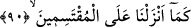

Ancak melekler, isimlerin muzhiri olmayıp sâdece bazı isimlerin mazharı oldukları için:
“Seni tenzih ederiz, senin bize öğrettiklerinin dışında hiçbir bilgimiz yok.”
dediler.” (el-Bakara, 2/32). İşte Allah, melekleri Âdem (a.s.)’a bu sırdan ötürü secde
ettirmiştir.
“Ve yüce Kur’ân’ı verdik” Yâni Allah’ın zâtıyla kâim hakîkatlerin yanı sıra o yüce
Kur’ân’ı, senin o yüce ahlâkın kılmak sûretiyle Allah’ın kadîm ahlâkından bir ahlâk
verdik. Nitekim Allah Teâlâ: “Şüphesiz sen yüce bir ahlâk üzeresin!” (Kalem, 68/4)
buyurmuştur. Âişe (r.a.)’ya Hz. Peygamber (s.a.)’in ahlâkı sorulunca “Onun ahlâkı
Kur’ân’dı.” diye cevap vermiştir.[94]
“Sakın onlardan bazı sınıflara verdiğimiz dünyâ malına göz dikme!” âyetinde Allah
Teâlâ, bir kuluna ve bir peygamberine böyle değerli makamlarla, böylesine büyük
nîmetleri verdiğinde bunun sonucu olarak o kulun da iki gözünü, yâni ne cismânî gözünü
ne de rûhânî gözünü, Allah’ın bu sınıflara verdiği dünyâ ve âhiret nîmetlerine
dikmemesi gerektiğine işâret edilmektedir.
“Onlardan dolayı” onlar bu nîmetlere ortak olmayı ellerinden kaçırdılar diye
“üzülme!”, Mîrac gecesi iki cihan nîmetlerinden “Sidre’yi kaplayan kapladığı” onları
gören “gözün” bunları gördüğü için “sapmadığı ve” onlara meylederek “sınırı
aşmadığı” (en-Necm, 53/16-17) zaman Rasûlullah (s.a.)’in hâli böyleydi.
Allah Teâlâ daha sonra şöyle buyuruyor: İşte bu makamda Allah’ın nîmetlerinin
şükrünü edâ etmek ve nîmetleri ve değerini artırması için Allah’a karşı tevâzu olmak
üzere “mü’minlere alçak gönüllü ol!” Burada bir mânâ daha vardır:
Mahbûbiyyet (Allah’ın sevgilisi olma) makamına erdikten sonra, sana tâbi olan
mü’minleri de o yüce himmet kanadınla mahbûbiyyet makamına ulaştırmak için onlara
kanadını indir. “Eğer Allah’ı seviyorsanız, bana tâbi olun ki Allah da sizi sevsin.”
(Âl-i İmrân, 3/31) âyeti de bu te’vilin doğruluğuna delâlet etmektedir. Nitekim et-
Te’vîlâtü’n-Necmiyye’de böyle geçmektedir.
90. Nitekim biz, (Kur’an’ı) kısımlara ayıranlara azâbı indirmişizdir.
“Nitekim biz, (Kur’an’ı) kısımlara ayıranlara azâbı indirmişizdir.” Bu ifâde, Rasûl
(s.a.)’in değil Allah Teâlâ’nın sözü olup “Andolsun sana verdik.” ifâdesine bağlıdır.
Çünkü oradaki “verdik” ifâdesi, “indirdik” anlamındadır. Yâni, yahudi ve hristiyanlara
önceki iki kitabı indirişimize benzer biçimde sana da tekrarlanan yediyi ve yüce
Kur’an’ı indirdik.